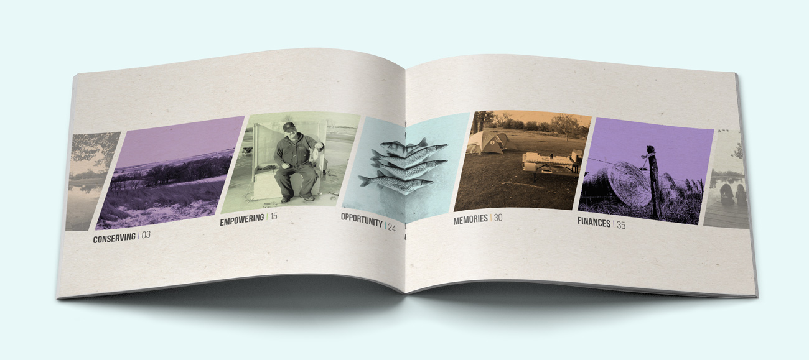
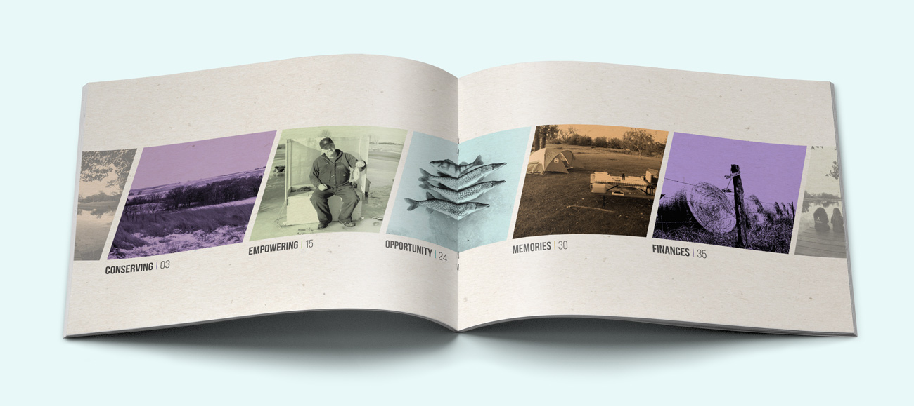
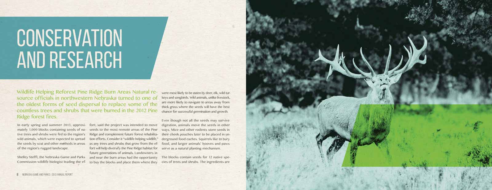
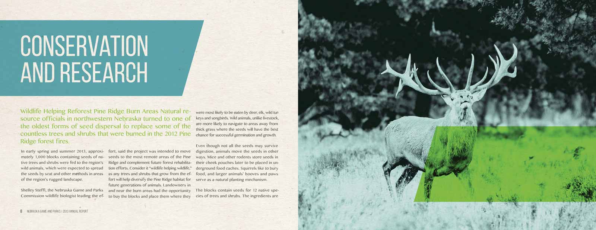

Central Plains Solutions
logo and identity system:
Central Plains Solutions is an independent business started by Nathan Ulrich and Matt McGuire based out of Wisner, NE. They sell ROB–SEE–CO seed (syngenta seed) and Crop metrics moisture probes. The problem they encountered is that they have a lot of competition in the surrounding area and need a logo that is unique to them and easily recognized by their clientele and is easily recognized by their clientele by showing the precision and accuracy they provide in water and crops. Central Plains Solutions targets primarily male farmers ages 25–40 working daily in the field. The language should be straightforward, referring to quality, reliability, and communicating that they sell trustworthy products that they sell trustworthy products.
 


 
